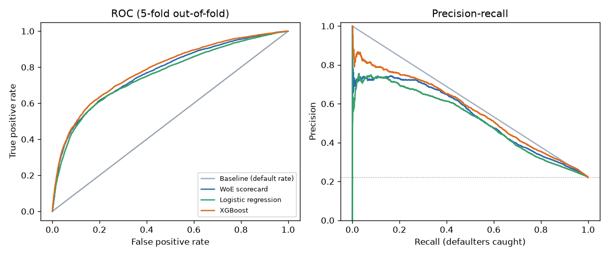
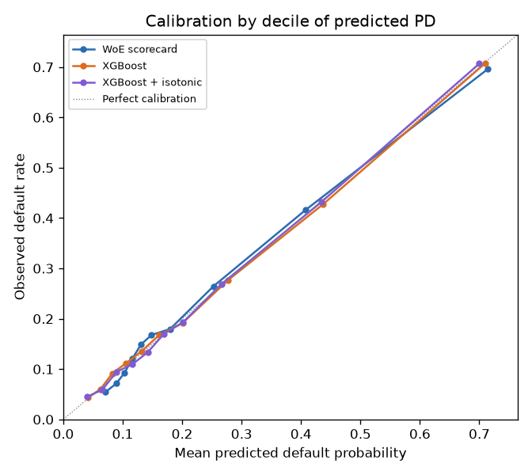
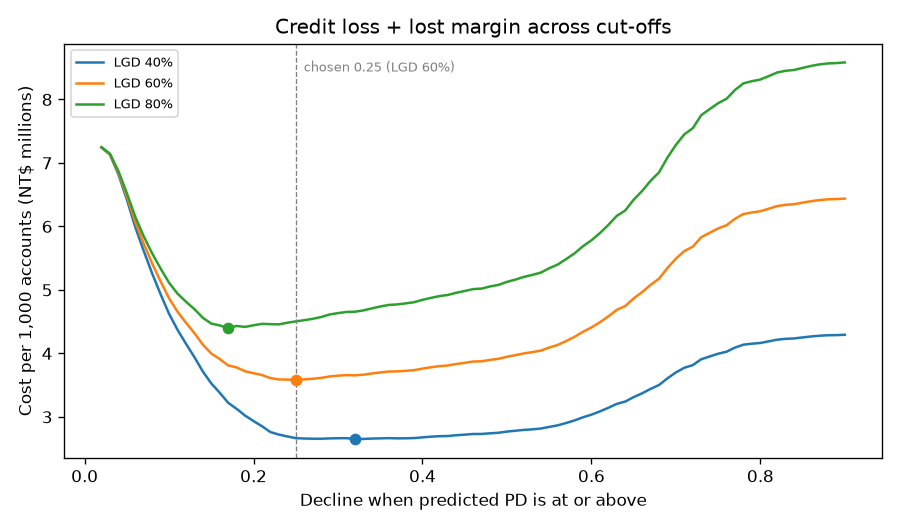
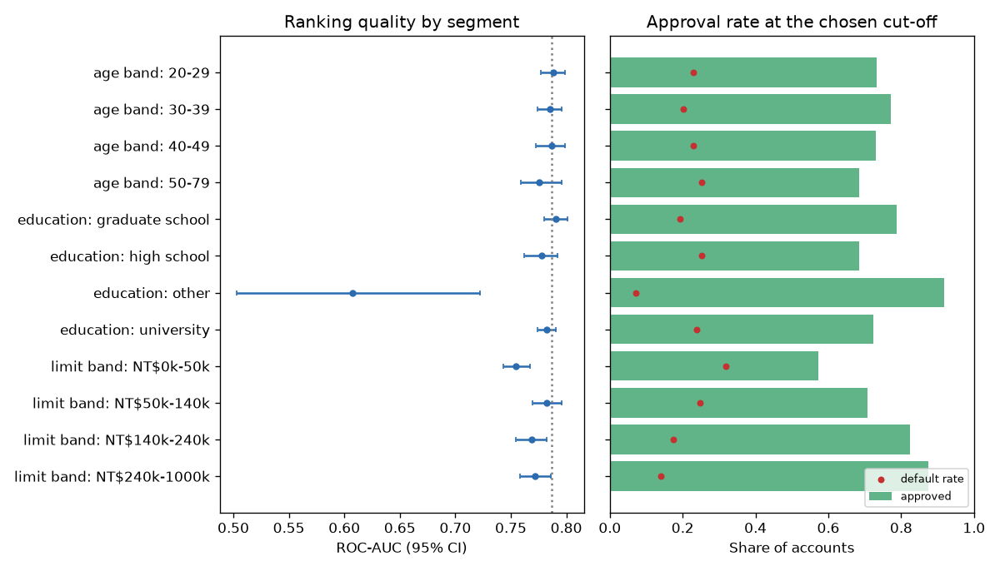
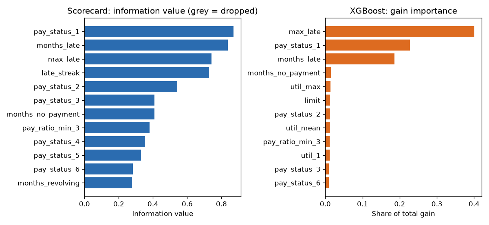
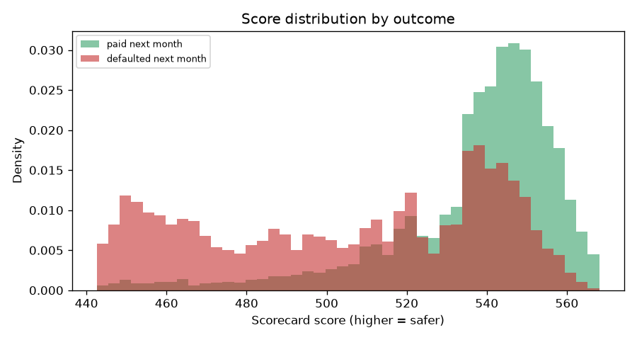

Which credit card accounts should keep their line open next year, and how much does the model behind that decision matter?
Stratified 5-fold cross-validation; every number is out-of-fold. 95% CIs from 1,000 paired bootstrap resamples of accounts.
| Model | ROC-AUC (95% CI) | PR-AUC (95% CI) | KS | Brier | Calib. error | Fold SD |
|---|---|---|---|---|---|---|
| Baseline: everyone gets the average default rate | 0.500 (0.500–0.500) | 0.221 (0.216–0.225) | 0.000 | 0.1723 | 0.0000 | 0.000 |
| WoE logistic scorecard | 0.772 (0.765–0.778) | 0.534 (0.521–0.547) | 0.417 | 0.1363 | 0.0125 | 0.007 |
| Logistic regression (raw features) | 0.758 (0.752–0.765) | 0.516 (0.502–0.528) | 0.411 | 0.1396 | 0.0077 | 0.011 |
| XGBoost (tuned) | 0.787 (0.780–0.793) | 0.562 (0.549–0.575) | 0.436 | 0.1332 | 0.0051 | 0.008 |
| XGBoost + isotonic recalibration | 0.787 (0.780–0.793) | 0.562 (0.548–0.574) | 0.436 | 0.1333 | 0.0053 | 0.008 |

XGBoost trained on log-loss is already close to calibrated (expected calibration error 0.0051); isotonic recalibration fitted on inner folds leaves it at 0.0053 and moves the Brier score by an amount whose CI (-0.0001–0.0003) includes zero. The scorecard is slightly worse calibrated (0.0125).

Keeping a defaulter's line open loses LGD × balance; closing a good account's line loses 18% × balance in margin. The cost-minimising cut-off on calibrated PDs is 0.25 (theory: margin / (LGD + margin) = 0.231). Expected cost falls from NT$6,465k to NT$3,584k per 1,000 accounts.
| LGD | Best cut-off | Theory | Approved | Saving / 1,000 accts | Saving % | Cost of keeping the 60% cut-off |
|---|---|---|---|---|---|---|
| 40% | 0.32 | 0.31 | 79.2% | NT$1,658k | 38.5% | NT$13k |
| 60% | 0.25 | 0.23 | 74.2% | NT$2,880k | 44.6% | NT$0 |
| 80% | 0.17 | 0.18 | 55.2% | NT$4,221k | 49.0% | NT$105k |

| Segment | Level | Accounts | Default rate | Mean PD | ROC-AUC (95% CI) | Approved |
|---|---|---|---|---|---|---|
| Age | 20-29 | 9,603 | 22.9% | 23.0% | 0.788 (0.777–0.799) | 73.2% |
| Age | 30-39 | 11,226 | 20.3% | 20.4% | 0.785 (0.774–0.796) | 77.2% |
| Age | 40-49 | 6,456 | 22.9% | 22.9% | 0.787 (0.773–0.799) | 73.1% |
| Age | 50-79 | 2,680 | 25.3% | 25.6% | 0.776 (0.759–0.795) | 68.4% |
| Education | graduate school | 10,563 | 19.2% | 19.4% | 0.791 (0.780–0.801) | 78.8% |
| Education | high school | 4,915 | 25.2% | 25.1% | 0.778 (0.762–0.792) | 68.4% |
| Education | other | 468 | 7.1% | 11.9% | 0.607 (0.503–0.722) | 91.9% |
| Education | university | 14,019 | 23.7% | 23.7% | 0.783 (0.774–0.791) | 72.3% |
| Credit limit | NT$0k-50k | 7,673 | 31.8% | 31.8% | 0.755 (0.743–0.767) | 57.3% |
| Credit limit | NT$50k-140k | 7,607 | 24.7% | 24.6% | 0.782 (0.770–0.796) | 70.8% |
| Credit limit | NT$140k-240k | 7,627 | 17.4% | 17.6% | 0.769 (0.755–0.782) | 82.4% |
| Credit limit | NT$240k-1000k | 7,058 | 14.0% | 14.3% | 0.772 (0.758–0.786) | 87.5% |

Sex and marital status are never model inputs. Men in this sample default more often (24.2% vs 20.8%) and the model's mean PD tracks that (23.6% vs 21.4%), so men are approved less often (71.7% vs 75.9%). Among accounts that did not default, 17.8% of men and 15.1% of women would have been declined.
| Group | Accounts | Default rate | Mean PD | Approved | Good accounts declined | Defaulters approved |
|---|---|---|---|---|---|---|
| female | 18,091 | 20.8% | 21.4% | 75.9% | 15.1% | 41.5% |
| male | 11,874 | 24.2% | 23.6% | 71.7% | 17.8% | 38.9% |
Highest information value: pay_status_1 (0.87), months_late (0.84), max_late (0.74), late_streak (0.73). XGBoost puts 81% of its gain on three features: max_late (40%), pay_status_1 (23%), months_late (19%). Dropped from the scorecard for IV below 0.02: age, education.

| Feature | Bin | Accounts | Default rate | WoE | Points |
|---|---|---|---|---|---|
| pay_status_1 | (-inf, -1] | 8,432 | 15.6% | +0.43 | 37 |
| pay_status_1 | (-1, 0] | 14,737 | 12.8% | +0.66 | 43 |
| pay_status_1 | (0, 1] | 3,667 | 34.0% | -0.60 | 11 |
| pay_status_1 | (1, inf] | 3,129 | 69.5% | -2.08 | -28 |
| months_late | (-inf, 0] | 19,918 | 11.7% | +0.76 | 31 |
| months_late | (0, 1] | 4,405 | 29.9% | -0.41 | 23 |
| months_late | (1, 2] | 1,899 | 38.8% | -0.80 | 21 |
| months_late | (2, inf] | 3,743 | 60.0% | -1.66 | 15 |
| max_late | (-inf, 0] | 19,918 | 11.7% | +0.76 | 26 |
| max_late | (0, 1] | 1,668 | 25.1% | -0.16 | 26 |
| max_late | (1, inf] | 8,379 | 46.3% | -1.11 | 27 |

30,000 credit card accounts from a Taiwanese bank (April to September 2005), UCI Machine Learning Repository, CC BY 4.0. Default rate 22.1%.
| Step | Rows in | Values changed | Rows dropped | Rows out |
|---|---|---|---|---|
| Fold undocumented EDUCATION codes 0, 5, 6 into 4 (other) | 30,000 | 345 | 0 | 30,000 |
| Fold undocumented MARRIAGE code 0 into 3 (other) | 30,000 | 54 | 0 | 30,000 |
| Drop accounts identical on every field except the id | 30,000 | 0 | 35 | 29,965 |